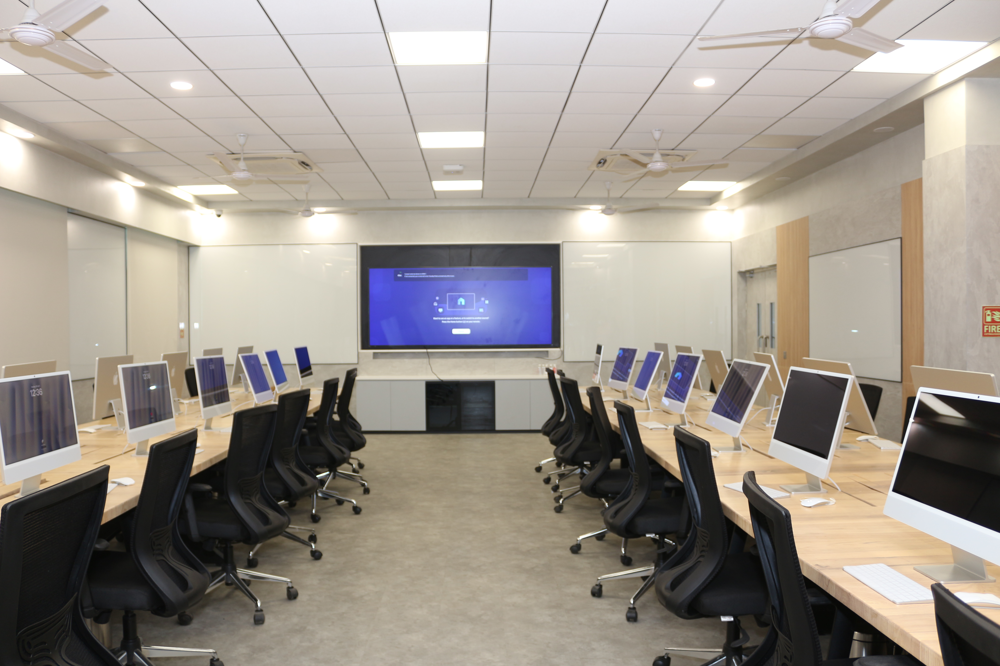
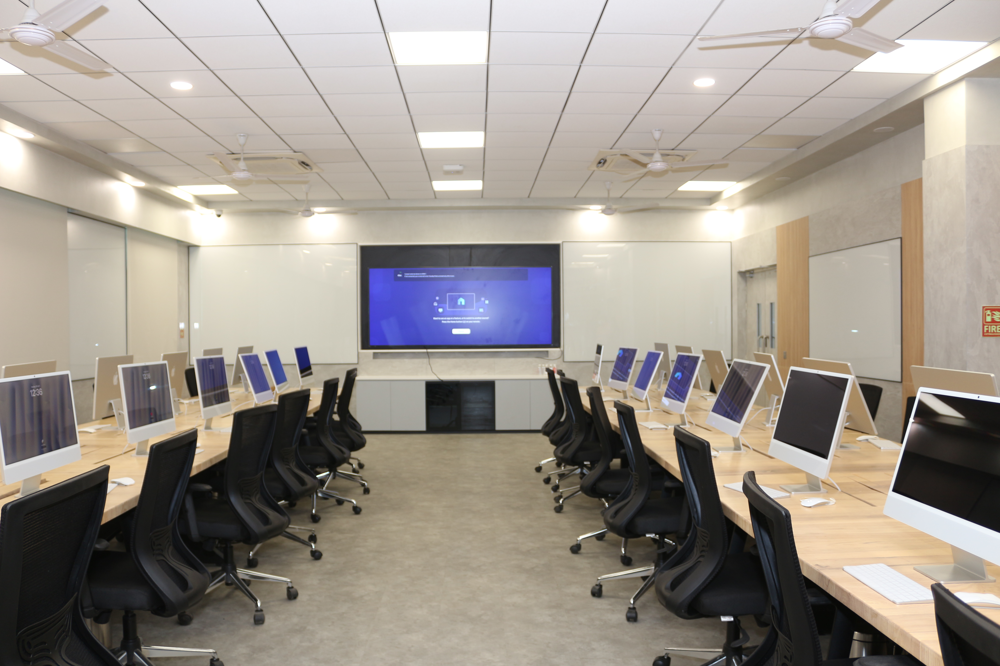

About
A formal Memorandum of Understanding (MoU) has been signed between Coforge and IIT BHU to establish and support the AI & Data Research Lab. This CSR initiative aims to upskill students, provide real-world exposure, and build a sustainable model of industry-academic collaboration.
Vision
To build a future-ready, inclusive, and innovation-driven AI & Data Research ecosystem at IIT BHU that empowers students to solve real-world problems through cutting-edge research, collaboration, and skill development. This initiative aims to foster collaborative research, skill enhancement in Data and AI technologies and foster a collaborative environment that benefits both the academic community and the industry.
Mission
To foster experiential learning and hands-on research in AI and data science for IIT BHU students.
To bridge the gap between academia and industry through strategic CSR collaboration.
To enable access to high-end infrastructure, professional learning platforms, and guided mentoring for holistic development.
Collaborative Framework
The Lab is developed through a CSR partnership model, where Coforge provides technological and strategic support including:
Access to Percipio learning licenses.
The lab will be equipped with advanced technology infrastructure to support high-impact research and development activities
Research mentorship, infrastructure planning, and event facilitation in coordination with faculty and staff.
Key Activities
1. Research & Development: conducting research in Data, Analytics, and AI field involving students, faculty, and industry experts aimed at developing industry relevant solutions and thought leadership.
2. Skill Development and Certifications: develop and train students in foundational technology skills in the area of Cloud, Data Management, Data Sciences, and AI/ML through hands academic projects, structured training, and industry standard certifications.
3. Publications and Patents: Active publication of research findings in reputed journals, presenting research in relevant conferences, and develop and file patents for significant innovations
4. Open-Source Community Contribution: Using and contributing to open source artifacts (code, algorithms, utilities, tools) through platforms like GitHub
5. Development of specific use cases – identifying (jointly) specific use cases for data driven analytics and AI use cases and developing these as part of research and academic projects. Some of the examples can be but not limited to: Distributed Data Structures for Data Mining and Machine Learning, Streaming Analytics, GenAI in Knowledge Management, Finetuning Language Models (LLM/SLM) for specific industry domain and others.
6. To organize regular mentoring sessions, workshops, and expert talks.
7. To serve as a replicable model for future CSR-academic collaborations in India.
Facilities
High-end Apple desktop machines, Azure cloud services and Percipio courses licenses.


 

Lab Guidelines
Milestones
MoU Signing and project initiation.
Establishment of high-tech lab space with Apple machines ,Video Conferencing System and Azure services.
Funded Research Projects under respective PI of CS Department.
Expected Outcomes
1. Enhanced Research Capabilities: Significant advancements in the chosen research areas, contributing to the academic institution’s research output.
2. Learning and Development: Industry-ready students, equipped with practical experience and knowledge.
3. Innovative Solutions: Development of innovative solutions and technologies that can be utilized for societal benefit
4. Strengthened Partnerships: A robust model of industry-academia collaboration that can be replicated in other institutions and sectors.
Team
Faculty Members
Prof. Sushant Kumar Shrivastava, Prof-in-charge of Corporate and Industrial Relations, IIT (BHU)
Prof. Sanjay Kumar Singh, CSE IIT (BHU) - Head of Lab
Dr. Bidyut Kumar Patra, CSE IIT (BHU)
Dr. Lakshmanan Kailasam, CSE IIT (BHU)
Dr. Pratik Chattopadhyay, CSE IIT (BHU)
Dr. Indradeep Mastan, CSE IIT (BHU)
Courses
The curriculum of the AI & Data Lab has been thoughtfully designed to bridge academic learning with industry application. Through courses students gain structured exposure to essential topics in Artificial Intelligence, Machine Learning, and Data Science.
Each module not only builds core theoretical knowledge but also emphasizes hands-on skills through real-world scenarios and a Capstone Project, helping students understand practical problem-solving.
This learning path equips students with the right mindset and technical foundation to enter the corporate world job-ready and confident, familiar with tools, workflows, and problem statements they’ll likely encounter in industry. It also encourages a research-oriented approach, promoting creativity, innovation, and depth in AI thinking. Upon successful evaluation of their project, students will receive certification, validating their practical skills in AI.
Percipio course details and schedule.
Mentoring Sessions
There will be two sessions - one from industry and other academia every month
Course projects - TBA
Registration
Link for application to the course.
Research Projects
The lab will run few research projects funded by Coforge. These initiative is designed to enhance student learning beyond the classroom, foster hands-on problem-solving, and align their capabilities with industry-ready standards. It not only boosts their resumes but also empowers them to contribute meaningfully to real-world AI applications — elevating the overall academic and professional growth of IIT BHU students.
| Project Title | Investigator(s) | Duration |
|---|---|---|
| AI-Powered Assitive Reading System for Visually Impaired Individuals | Dr. Indradeep Mastan (PI) and Prof. Sanjay Kumar Singh (Co-PI) | 2 Years |
| AI-assisted Vulnerability Detection | Dr. Lakshmanan Kailasam (PI) and Prof. Sanjay Kumar Singh (Co-PI) | 2 Years |
| Developing a Soil Health Monitoring System Using IoT and AI to Ensure Sustainable Farming | Dr. Pratik Chattopadhyay | 3 Years |
| Investigating Cognitive Resources to the Interventions for Enhancing Mathematical Ability of School Children (Grade II - Grade VIII) in Varanasi, India Exploiting Oscillatory Brainwave Paradigms | Dr. Bidyut Kumar Patra | 3 Years |
Events
We will be having various mentoring sessions every month one by professors of various iits and one for industry leaders on AI, Data science and machine learning. We will let you the schedule of session in our website.
Upcoming workshops, hackathons, seminars, expert talks, and lab-specific engagements will be announced here.
Contact
Coforge Data and AI Lab, First Floor TLC Building, IIT (BHU)
If you have any queries, drop out an email at : manager.ailab@itbhu.ac.in